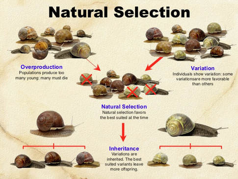

What is Overproduction in Biology?
Overproduction is a fascinating biological concept where organisms produce more offspring than the environment can support. This strategy increases the chances of survival for at least some individuals, which leads to the process of natural selection and the evolution of species over time.
Why Overproduction Matters
Overproduction plays a crucial role in the diversity and adaptation of species. By producing a surplus of offspring, organisms increase their odds of survival in the face of various challenges, such as competition, predation, and environmental changes. Those individuals with favorable traits have a better chance of surviving and passing on those traits to future generations, ultimately shaping the characteristics of the entire population.
Examples of Overproduction
Overproduction can be observed in various organisms, from plants producing an abundance of seeds to animals having large litters. For instance, a single oak tree may produce thousands of acorns in a season, but only a few will grow into new oak trees due to limited resources and competition among seedlings.
How Overproduction Drives Evolution
The process of natural selection, driven by overproduction, results in the survival and reproduction of individuals with advantageous traits. Over time, these advantageous traits become more common in the population, while less favorable traits gradually diminish. This is how species adapt to their changing environments and evolve over generations.
